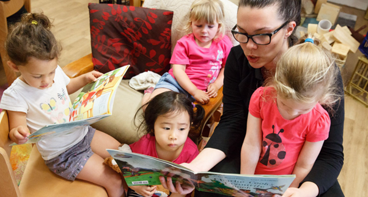

Health and wellbeing contexts in early childhood education encompass a wide range of issues affecting children and families, including parental mental illness, substance use, trauma, grief, and experiences of abuse or neglect. These factors significantly influence children’s emotional, social, and cognitive development, as well as their engagement within early learning environments. According to the Australian Institute of Health and Welfare, one in seven Australian children under five years old is affected by mental health or wellbeing challenges within the family environment (Australian Institute of Health and Welfare, 2022).
Sociological theories provide insight into the impact of health and wellbeing issues. Trauma-Informed Care Theory emphasises that exposure to adverse experiences can affect brain development, stress regulation, and attachment, and underscores the need for sensitive, supportive responses in early childhood settings (Kendrick, 2005). Maslow’s Hierarchy of Needs highlights that children’s capacity to engage in learning depends on the fulfilment of fundamental needs such as safety, nutrition, and emotional security (Maslow, 1943). Contemporary research demonstrates that parental mental illness, substance use, or exposure to abuse increases the risk of developmental delays, emotional dysregulation, and behavioural challenges in children.
Health and wellbeing contexts are diverse and evolving. Families may experience chronic mental health issues, episodic substance use, or sudden crises such as bereavement or domestic violence. Early childhood educators must understand the intersectionality of these challenges and respond with evidence-based, flexible, and culturally sensitive approaches that support children’s holistic development.
Children exposed to adverse health and wellbeing contexts are at heightened risk of developmental, emotional, and social challenges. Parental mental illness can affect attachment, emotional security, and the consistency of caregiving, leading to difficulties in emotional regulation, social interaction, and learning engagement (Perry, 2006). Similarly, parental substance use may result in neglect, inconsistent routines, or unsafe environments, which negatively influence children’s wellbeing (Australian Institute of Health and Welfare, 2022).
Trauma, abuse, or grief can have long-term effects on children’s cognitive, social, and emotional development. These experiences may manifest as anxiety, aggression, withdrawal, or difficulty forming relationships with peers and educators. Families themselves face stress, stigma, and social isolation, which can reduce access to early childhood services and support networks. Early childhood educators play a crucial role in mitigating these effects by providing nurturing, predictable, and responsive learning environments that prioritise children’s safety and wellbeing.
Australian social policies and initiatives aim to support the health and wellbeing of children and families:
Recent data show that nearly 14% of Australian children experience some form of mental health challenge, while 1 in 6 children are exposed to family violence, highlighting the urgency of these policy responses (Australian Bureau of Statistics, 2021). Policies guide early childhood practice by establishing referral pathways, promoting trauma-informed care, and providing frameworks for collaboration with specialist services.
Early childhood educators can implement the following evidence-based strategies to support children and families facing health and wellbeing challenges:
Building professional partnerships strengthens support networks for children and families:
These partnerships enhance service coordination, ensure access to appropriate interventions, and support the implementation of trauma-informed practices within early childhood settings.